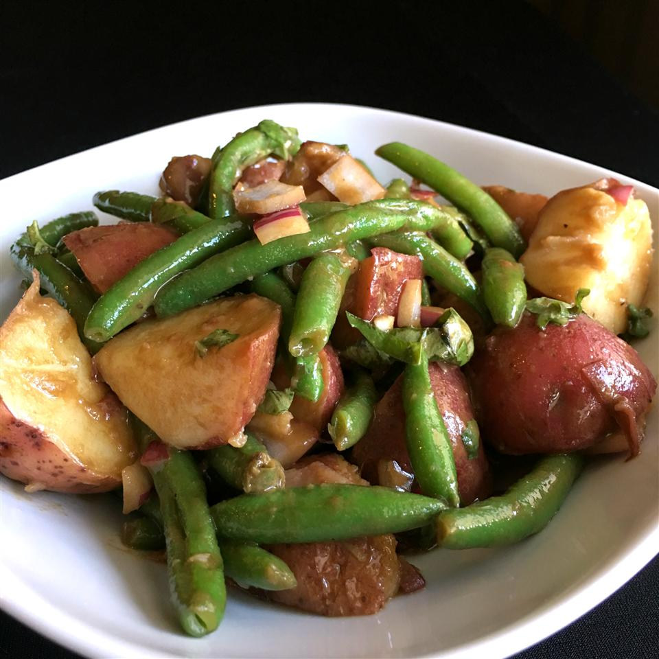

Green Bean and Potatoe Salad

Description here
Ingredients
- Red potatoes
- Fresh green beans
- Chopped fresh basil
- Chopped small red onion
- Salt and pepper to taste
- Balsamic vinegar
- Dijon mustard
- Fresh lemon juice
- Minced Garlic
- Worcestershire sauce
- Virgin olive oil
Directions
- Place the potatoes in a large pot, and fill with about 1 inch of water. Bring to a boil, and cook for
about 15 minutes, or until potatoes are tender. Throw in the green beans to steam after the first 10
minutes. Drain, cool, red onion, salt and pepper. Set aside.
- In a medium bowl, whisk together the balsamic vinegar, mustard, lemon juice, garlic, worchestershire
sauce and olive oil. Pour over the salad, and stir to coat. Tast and season with additional salt and
pepper if needed.
- Enjoy